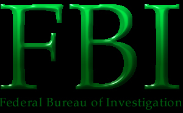

We are back. We admit it, we are owned. Hackers own our lame asses. We thought we could hold you all down by raiding a bunch of innocent hackers, but we failed. Here is a little FYI. It is true, the FBI is a group of gay hackers. We were supposed to be the GBI, The Gay Bureau of Investigation. But, there was an error in a newspaper calling us the FBI. We thought it sounded better so we went along with it. Besides, it would help keep our cover better. Most of our time is spent beating off to gay porno magazines while our fellow agents get anally molested by the CIA, the Central Impotence Agency. From my ten years with the FBI, my anal orifice has become a whopping eight inches wide from all the anal sex0r. Well, I have to go now. My gay boyfriend is paging me. I just love to stroke his cock while a cock is inside my ass. =-O~~ We are owned by: gH, p0gO, ne0h, Devil-C, KoLdKuTtA, ox1dation, OpticMyst, chr0nicle, f0rpaxe, Level 7, Defiance, Bell (cuz they have nice toys), eckis, v00d00, Mozy, Cyrus, jennicide, MagicFX, DigiAlmty, and the rest of the hacking scene. We are NOT owned by: the posse (cuz they are lame kiddies). |
©1999 FBI